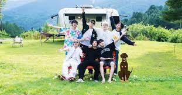

ARMY page
Hey there, meet the BTS ARMY - a lively bunch of fans who've fallen head over heels for the sensational BTS! 🌟 We're the heart and soul behind the magic of BTS, brought together by our love for their music and all-around greatness. Whether you're a seasoned ARMY or just starting your BTS adventure, you're in for a fantastic ride. 🎶💜 Join us to celebrate the seven incredible members, their music, and their positive vibes. Here, you're not alone; we're your global family, here to connect, have a blast, and support each other. So, dive in, explore, and be part of this fantastic crew. Let's make memories together! 💫 #BTSARMY
concerts and tours
Welcome to the electrifying world of BTS concerts! 🎤🌟 Immerse yourself in the thrilling atmosphere of BTS live performances, where music becomes magic, and fans from around the globe unite for an unforgettable experience. Whether you're a concert veteran or a first-time attendee, get ready for an extraordinary journey. 🎶💜 Join us as we celebrate the seven incredible members of BTS, their music that comes to life on stage, mesmerizing performances, and the undeniable connection with the audience. It's more than just a show; it's an incredible bond of ARMYs coming together to create unforgettable memories. So, get your lightsticks ready, and join the excitement! Let's make concert memories that will last a lifetime! 💫 #BTSLive


variety shows
Welcome to the world of BTS Variety Shows! 📺🌟 Get ready to laugh, learn, and bond with the hilarious and heartwarming moments of BTS as they tackle exciting challenges and showcase their fun-loving personalities. Whether you're a seasoned viewer or just starting to explore, prepare for an entertaining journey. 🎶💜 Join us as we delve into the world of the seven talented members of BTS, their witty banter, and unforgettable moments on a variety of shows. It's not just TV; it's an opportunity to connect with ARMY and share in the joy of our favorite group. So, grab your popcorn and let's dive into the world of BTS Variety Shows! Together, we'll make memories that will keep you smiling! 💫 #BTSVariety
BTS offers their dedicated fanbase, known as ARMY, an exclusive glimpse into their lives through a trio of captivating variety shows. First, 'BTS In the SOOP' whisks you away to serene, forested getaways where BTS shares their camaraderie and tranquility. 🌲🌟 It's the ultimate relaxation and bonding session!😌💜 Then, brace yourself for 'Run BTS!' - a rollercoaster of hilarity filled with challenges and games that will have you laughing till your sides hurt. 🏃‍♂️🎢 Get ready for endless fun! 🤣 But that's not all! 'Bon Voyage BTS' is your golden ticket to globetrotting adventures. 🌍✈️ Join BTS as they explore new cultures and build deep connections with fans worldwide. It's a journey of a lifetime! 🌏💫 These shows are your personal VIP passes to BTS's world, bringing you closer to the members and creating an unbreakable bond with their fans. 🎤🌟 It's all about sharing unforgettable moments! 🤗💖